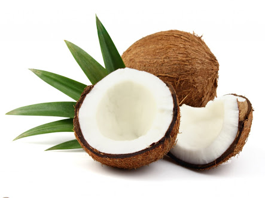
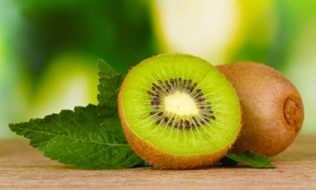
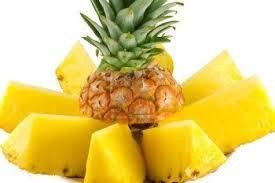
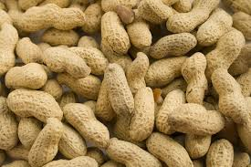

Documentacion de las frutas
Las frutas son, quizás, los alimentos más llamativos por su diversidad de colores y formas. Pero además de lo que muestran a simple vista, forman parte de los alimentos con mayor cantidad de nutrientes y sustancias naturales altamente beneficiosas para la salud.
Si nos detenemos a pensar, veremos que las frutas y todos los vegetales, sobreviven a la intemperie, enfrentando todo tipo de condiciones y agresiones meteorológicas.
Todo ello es posible gracias a las sustancias protectoras y antioxidantes naturales que poseen. En definitiva esas mismas sustancias son las que nos protegen cuando consumimos el alimento.
Es decir que nos beneficiamos absolutamente con todas esas vitaminas y nutrientes que la fruta posee. Llenamos de vida todo nuestro organismo.

Eduardo Trujillo Machorro
arandano
El fruto es una baya auténtica de tamano superior al de las hojas. Es inicialmente blanco, pero se vuelve rojo intenso al madurar. Es comestible, con un sabor ácido que puede enmascarar su dulzor
Pie de página
frambuesa
Su fruto es conocido con el mismo nombre que la planta y consiste en una polidrupa de sabor fuerte y dulce. La frambuesa fructifica a finales de verano o principios de otono. Esta fruta del bosque es parecida a la zarzamora, pero más pequena y blanda
Pie de página
Fresa
La fresa es un fruto de color rojo brillante, suculento y fragante que se obtiene de la planta que recibe su mismo nombre. En Occidente es considerada la "reina de las frutas". Además de poderse comer cruda se puede consumir como compota, mermelada,... Es empleada con fines medicinales ya que posee excelentes propiedades que ayudan a preservar la salud
Pie de página
Grosella espinosa
La grosella espinosa o también denominada agrazón o uva espina (Ribes grossularia o Ribes uva-crispa) es una baya que según la especie puede ser blanca, amarilla, roja o verde, con una piel espinosa, vellosa o suave. Las diferentes variedades se diferencian entre sí por la época de maduración, sabor, color, tamano, forma del fruto y modo de consumo. Predomina el fruto amarillento con piel vellosa, aunque existen también variedades de piel rojiza, verde oscura y verde pálida blancuzca.
Pie de página
Grosella negra
La grosella negra es una baya de pulpa translúcida con tonos rojos o verdes y de sabor agridulce. El fruto es pequeno, de color azul negro y esférico con un sabor intenso cuando está completamente maduro. Esta baya está recubierta de vello y su pulpa contiene muchas semillas pequenas. Estos frutos no son sueltos sino que crecen en racimos.
Pie de página
Grosella roja
Las grosellas rojas son unas pequenas frutas redondas de color rojo. Aunque se pueden consumir crudas, su sabor agridulce las hace indicadas para la elaboración de mermeladas, batidos, helados, etc. Son ricas en vitaminas y minerales
Pie de página
Zarzamora
La zarzamora es una planta generalmente silvestre de la que se aprovechan sus frutos, unas bayas pequenas de color negro muy aromáticas y algo ácidas. Se consumen crudas, aunque también se emplean en la elaboración de compotas, macedonias, tartas, etc. Son ricas en vitaminas y minerales. Además aportan fibra y contienen pocas calorías.
Pie de página
Limon
Su fruto es el limón una fruta comestible de sabor ácido y extremadamente fragante que se usa en la alimentación
Pie de página
Mandarina
La mandarina es un fruto similar a la naranja pero más pequena y achatada por su base. Su corteza es lisa, brillante color rojo anaranjado y es muy fácil de pelar, incluso con las manos. La mandarina se consume principalmente como fruta en fresco, aunque también son conocidos las conservas de gajos de mandarinas.
Pie de página
Naranja
La naranja es un fruto redondo, color naranja, consumido mayoritariamente en invierno. La pulpa del interior es también anaranjada y está formada por pequenas bolsitas llenas de zumo.
La naranja se usa para consumo en fresco y, para la industria, principalmente en zumo.
Pie de página
Pomelo
Este fruto pertenece al árbol “citrus paradisi” de la familia de las Rutáceas. Su forma es como la de una naranja, pero de mayor tamano y es de color amarillo como el limón, aunque existen variedades de color verde y rosáceo.
Su sabor es algo amargo pero muy agradable al paladar. El pomelo ha sido objeto de innumerables estudios científicos y han quedado demostrados sus efectos protectores y curativos para nuestra salud
Pie de página
Cucurbitáceas
Pie de página
Melón
El melón puede ser redondo o alargado, de corteza amarilla, verde o combinada según la variedad. La pulpa es aromática, jugosa y dulce, resultando una fruta ideal para calmar la sed.
Pie de página
Sandía
La sandía es un fruto grande y de forma más o menos esférica que suele consumirse cruda como postre. Su pulpa es de color rojizo o amarillento y de sabor dulce. Resulta un alimento muy refrescante que aporta muy pocas calorías al organismo, también aporta algunas vitaminas y minerales.
Pie de página
Aguacate
Persea americana es un árbol originario de México, Guatemala , El Salvador y Perú,1 perteneciente a la familia de las lauráceas. Tanto su fruto, comestible, como el árbol, se conocen como aguacate o palta, según la región.
Pie de página
Carambola
La carambola es una fruta exótica muy cotizada en los mercados internacionales, conocida popularmente como "fruta estrella" o "star fruit".
Pie de página
coco

El coco es un fruto redondo y alargado de carne blanca, fibrosa y aceitosa cubierta por una cáscara dura, de color marrón y peluda. El coco tiene una envuelta fibrosa, una carne blanca dentro que recibe el nombre de copra y, cuando el fruto está aún tierno, un líquido lechoso que se suele usar como alimento básico de algunas zonas.
Pie de página
chirimoya
Es una fruta que pertenece a la familia de las Anonáceas, que consta de unas 800 especies arbóreas de las regiones tropicales, con frutos en baya y carnosos. El género Anona consta de 120 especies de las que unas 20 se cultivan por sus frutos en la América tropical y sur de Europa. Procede del chirimoyo, un árbol que puede alcanzar hasta 8 metros de altura.
Pie de página
Datíl
El dátil es una fruta obtenida de la palmera datilera , alimento básico para países del Magreb. La fruta es considerada edulcorante por su cantidad de azúcar aproximadamente el 70%. Su nombre es derivado de la palabra griega δακτύλος ("daktilos"), que significa "dedo".
Pie de página
Kiwi

El kiwi es un fruto de forma ovoide, de tamano variable y recubierto de una piel fina de color marrón, ligeramente vellosa. Puede tener de 4 a 7,5cm de longitud por 3,5 a 5cm de anchura y el peso varía de 30-150g en función de la variedad, las condiciones climáticas y del sistema de cultivo. La pulpa puede ser de color verde de distinta tonalidad según la variedad, tierna, jugosa y de sabor agridulce. Presenta numerosas y pequenas semillas negras comestibles. El color de la pulpa y el sabor delicado de la misma que recuerda en parte a la uva, a la fresa y a la pina, lo hacen muy agradable.
Pie de página
Fruta de la pasión
La fruta de la pasión es una fruta tropical que proviene de diversas especies de plantas del género Passiflora. Se consume por su pulpa, que es jugosa, dulce y algo ácida, con la que además se pueden preparar helados, sorbetes, zumos, etc. Es un alimento rico en vitaminas y minerales. También aporta fibra y es bajo en calorías.
Pie de página
litchi
La fruta (que en realidad es una falsa fruta, compuesta por una cobertura carnosa llamada arilo) es una drupa que tiene 3-4 centímetros de longitud y unos 3 cm de diámetro. La parte exterior (epicarpio) es de color rojo y fácil de retirar. El mesocarpio (interior) está formado por capas de pulpa blancas, dulces y translúcidas, ricas en vitamina C con una textura similar a la de la uva. En el centro se encuentra la semilla rodeada por un duro endocarpio.
Pie de página
Mango
El mango está reconocido como uno de los 3 ó 4 frutos tropicales más finos. Es una fruta que se obtiene del árbol del mismo nombre.
Tiene forma ovalada, con la piel no comestible y color variable de amarillo pálido a rojo intenso. La pulpa es pegajosa y su coloración también varía, desde amarillo a anaranjado. El sabor del mango maduro es dulce, y bastante ácido cuando aún está verde. Es una fruta jugosa y fibrosa, y poseen un hueso interior. Su tamano varía entre 5-20 cm de longitud, con un peso de 300-400 g, llegando algunas piezas a alcanzar más de un kilo.
Pie de página
Papaya
La papaya es una fruta tropical que se consume por su pulpa principalmente, que suele ser de color anaranjado y de sabor dulce y jugoso. También se aprovechan sus semillas secas. Se puede tomar como fruta fresca, cocida o en diversos preparados como helados, refrescos y jaleas. Es un alimento bajo en calorías y altamente digestivo
Pie de página
Pina

La pina madura tiene una fragancia muy singular. Es de hermoso color y agradable sabor agridulce. Se puede comer cruda o como ingrediente en zumos, conservas, licores, etc. Tanto el fruto como las hojas se usan en la preparación de compuestos medicinales.
Pie de página
Platano
El plátano o banano es una fruta amarilla, de forma alargada, que encontramos en el mercado en grupos de tres a veinte, de forma similar a un pepino triangular, oblongo y normalmente de color amarillo. Su sabor es más o menos dulce según la variedad.
Pie de página
Fruta dulce
Pie de página
Albaricoque
El albaricoque es un fruto similar al melocotón pero mucho más pequeno, de color amarillo pálido o anaranjado con alguna sombra roja. La pulpa no es muy jugosa, tiene cierta textura fibrosa y consistencia harinosa cuando el albaricoque está maduro. Se consume principalmente como fruta fresca, aunque también se utiliza para fabricar algunos derivados como compotas, mermeladas, zumos y los famosos ‘orejones’ que no son más que albaricoques secos
Pie de página
Cereza
La cereza es un fruto que puede consumirse fresco o utilizarse en la elaboración de tartas, mousses, mermeladas y compotas. Generalmente las cerezas de mayor tamano son las que tienen mejor textura y sabor.
Pie de página
Ciruela
La ciruela es una fruta de hueso, redonda o alargada que puede ser de color amarillo, verde, rojo o lila. En general es muy nutritiva y rica en vitaminas, destacando la vitamina C. Según su contenido en agua es más o menos jugosa. Las ciruelas pasas o deshidratadas se conservan más tiempo y son muy dulces.
En el mercado hay otros productos elaborados con ciruela como son mermeladas, zumos y licores.
Pie de página
Higo
El higo se considera un falso fruto, es un receptáculo que contiene cientos de pequenos frutos que vulgarmente llamamos pepitas. Se utiliza como fruta para consumo en fresco, desecado, como puré para confiterías, en conserva o confitados.
Pie de página
Kaki
El fruto es una baya, con el cáliz persistente, y que puede ser astringente (por la presencia de tanino) y entonces se da una maduración completa en el árbol, o bien no astringentes y de maduración completa después de la cosecha. Tiene la particularidad de que no se puede consumir en el momento de la recolección, ya que necesita un proceso de sobremaduración debido a su aspereza, por lo que se suele tratar antes untándolo con alguna clase de bebida alcohólica fuerte, como el conac, el aguardiente o la cazalla.
Pie de página
Manzana
La manzana es el fruto ideal para tomar a cualquier hora y participa positivamente en la consecución del equilibrio alimentario. La piel puede ser de color verde, amarilla o rojiza, y la carne va desde un sabor agrio hasta el dulce.
Es uno de los frutos más consumidos en el mundo. La gran cantidad de variedades existentes hacen que se encuentren al alcance del consumidor durante todo el ano.
Pie de página
Melocoton
El melocotón es un fruto redondo, coloreado, jugoso y típicamente veraniego.
Su producción se extiende a lo largo de los países por lo que podemos disponer de este fruto a lo largo de todo el ano.
Usado para consumo en fresco y, para la industria, especialmente enlatado.
Pie de página
Nectarina
la nectarina es un fruto redondo, con carne jugosa, con hueso, parecido al melocotón. Su piel no es vellosa sino lisa como la de la ciruela y se puede consumir sin pelar o pelado. La época de recolección de la nectarina es durante el mes de mayo en el Hemisferio Norte, aunque se puede encontrar en los mercados durante todo al ano ya que se cultiva en muchos países del mundo.
Pie de página
nispero
El níspero es una fruta amarilla que nace en racimos, con un sabor dulce pero ácido en el fondo. También se le llama ciruela japonesa y se cultiva en muchos lugares del mundo. No solo tiene un sabor delicioso y refrescante, sino que además contiene una alta cantidad de vitaminas y minerales, importantes para el cuerpo.
Pie de página
Pera
La pera es un fruto muy extendido hoy en día por todo el mundo, que se consume tanto en fresco como cocinada, y que está disponible durante todo el ano.
Existen numerosas variedades cultivadas, que varían tanto en forma como en tamano y colores.
Pie de página
Uva
La uva es un fruta que crece en racimos apretados. Su pulpa es blanca o púrpura y de sabor dulce. Se consume como fruta fresca o zumo, aunque su utilidad principal es la obtención de vinos. También se realizan conservas con ella. Contiene diversos minerales y vitaminas, y se piensa que tiene poderes antioxidantes y anticancerígenos.
Pie de página
Frutos secos
Pie de página
almendra
La almendra es la semilla comestible del fruto del almendro dulce, de color blanco brillante envuelta con una cubierta marrón rojiza.
Se consume como fruto seco, frito y/o salado y también se elaboran productos tan conocidos como el turrón y el mazapán.
Pie de página
Avellana
Las avellanas son uno de los frutos secos más deliciosos que existen, son muy sencillas de incorporar en todo tipo de comidas, ya sean dulces o saladas. Incluso por sí solas son deliciosas. Una de sus aplicaciones más extendidas es junto al chocolate, ya sea en crema o como ingrediente para bombones.
Pie de página
Cacahuate

Los beneficios del cacahuate son muchos, por eso es muy importante tener en cuenta su consumo regular. Este alimento se puede consumir entero o tostado, siendo en ambos casos un gran beneficio para la salud.
Pie de página
Castana
• Alto contenido en hidratos de carbono, proteínas y fibra.
• Bajo contenido calórico (en torno a 190 Kcalorías/100 gr.).
• Alto contenido en minerales: magnesio, potasio, hierro y fósforo.
• Propiedades vasculares reconstituyentes y antiinflamatorias.
El otono es una buena época para disfrutarlas, sobretodo porque puedes ir al campo en companía de tu familia, pareja o amigos, armarte con una bolsa y un palo de madera y pasar un día inolvidable buscando castanas en las jornadas más hermosas de esta bella época del ano.
Pie de página
Nuez
Se ha demostrado que las nueces mejoran la salud ósea y contribuyen a reducir el impacto de algunas enfermedades neurológicas.
También alimentan el cerebro con nutrientes que contribuyen a que las conexiones neuronales sean más eficaces. Su alto contenido en grasas saludables es el responsable de estos beneficios.
Pie de página
Pacana
Como te indicábamos en las líneas anteriores, las nueces pecanas son originarias de Norteamérica, lugar de donde suelen provenir (aunque en la actualidad también podemos encontrarlas en otras partes del mundo.
Destacan por tener una apariencia bastante parecidas a las nueces comunes, pero poseen unaapariencia algo más alargada, además de que su cáscara es lisa (como no ocurre con las más comunes).
Como ocurre igualmente con las nueces, sorprende su alto contenido en ácidos grasos saludables(sobretodo en ácidos grasos monoinsaturados), lo que significa que son frutos secos ideales a la hora de bajar el colesterol alto (en especial el colesterol LDL), así como los triglicéridos.
Pie de página
Pistacho
Como bien sabemos, las personas con un nivel de colesterol, lípidos y lipopotreínas elevado tienen riesgo de sufrir problemas al corazón. El pistacho, por sus altos niveles de luteína, beta-caroteno y gamma-tocoferol (responsables de la vitamina A y E) respecto a otros frutos secos, aumenta el nivel de antioxidantes en sangre.
Pie de página


.jpg)